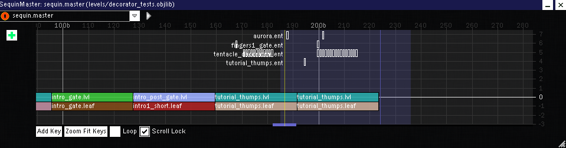

.master Objects
A .master Object is the sequence master of a level .objlib file, defining the order of all .lvl Objects and .gate Objects within that file. Each level .objlib file has exactly one .master Object.
A screenshot of Drool's Editor with a .master Object open is shown below.

Format
Header
| Length | Data Type | Meaning |
|---|---|---|
| 4 | int32 | Unknown |
| 4 | int32 | Unknown |
| 4 | int32 | Unknown |
| 4 | int32 | Unknown |
Animation Definition
Unknown
Main Definition
| Length | Data Type | Meaning |
|---|---|---|
| 4 | N/A | Section marker. 3c8efb12 = Unknown |
| 4 | int32? | Unknown |
| 4 | float32 | Unknown |
| variable | string | Unknown |
| variable | string | Intro .lvl object name. This is the first .lvl Object in a level, before other .lvl/.gate Objects defined below. |
| 4 | int32 | Number of groupings of .lvl/.gate Objects. Each grouping contains either a .lvl Object or a .gate Object, but not both. |
For Each Grouping
| Length | Data Type | Meaning |
|---|---|---|
| variable | string | .lvl object name |
| variable | string | .gate object name |
| 1 | bool | Checkpoint. If this is set to 1, a checkpoint is placed after the .lvl/.gate Object; if this is set to 0, no checkpoint is placed. |
| variable | string | Checkpoint leader .lvl object name. (To be confirmed): If this is non-empty, this represents the .lvl Object placed before the .lvl/.gate Object, typically a short rest between the last checkpoint the current .lvl/.gate object. |
| variable | string | Rest .lvl object name. If this is non-empty, this represents the .lvl Object placed before the .lvl/.gate Object, typically a long rest between sub-levels. |
| 7 | Unknown | Unknown |
| 1 | bool | PLAY +. If this is set to 1, this .lvl/.gate Object is present in the PLAY + mode of the level; if this is set to 0, this .lvl/.gate Object is omitted from the PLAY + mode. |
Footer
| Length | Data Type | Meaning |
|---|---|---|
| 1 | bool | Unknown |
| 1 | bool | Unknown |
| 4 | int32 | Unknown |
| 4 | int32 | Unknown |
| 4 | int32 | Unknown |
| 4 | int32 | Unknown |
| 4 | float32 | Unknown |
| 4 | float32 | Unknown |
| 4 | float32 | Unknown |
| variable | string | Unknown |
| variable | string | Unknown |